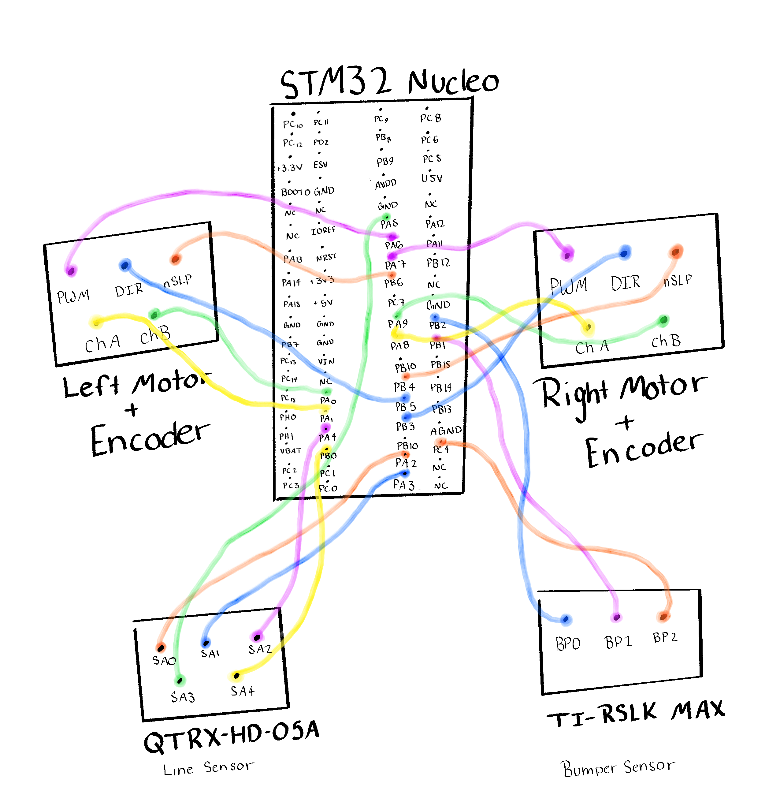

Electrical Design¶
The electrical design of Robert is centered around the Nucleo L476RG microcontroller, which interfaces with the motors, encoders, line sensor, bumper sensors, and supporting hardware. The robot uses two DC motors for differential drive, each controlled independently through PWM and direction signals. This configuration allows Robert to adjust left and right wheel speeds separately for both line-following and hard-coded driving maneuvers.
Each motor uses three control pins:
PWM– controls motor effort through pulse-width modulationDIR– controls motor directionnSLP– enables or disables the motor driver
The left and right motors are initialized separately in software, and both are connected to the same PWM timer operating at 20 kHz. Each motor is then enabled and controlled independently through separate timer channels.
The wheel encoders provide position and speed feedback for both motors. Each encoder uses two pins:
Channel AChannel B
These quadrature encoder signals are used for closed-loop motor control, checkpoint detection, and distance-based movement during hard-coded sequences such as the garage and cup tasks.
The line-following system uses a 5-channel analog Pololu QTR reflectance sensor. The sensor is connected to five analog-capable input pins on the microcontroller and is read through the LineSensorArray class in software. These five sensor channels are used to estimate the line centroid and generate the steering correction used during line following.
The bumper sensing system is implemented using a 3-pin bump sensor board. The three bumper inputs are:
BMP0BMP1BMP2
These inputs are configured as digital inputs with pull-up resistors enabled. The bumper sensors are primarily used during the garage and cup sequences, where physical contact or trigger conditions are needed to transition between states.
Wiring Overview¶
The hardware used in the final implementation is summarized below.
Motor Driver Connections¶
Left motor:
- PWM → Pin.cpu.A6
- DIR → Pin.cpu.B5
- nSLP → Pin.cpu.B6
Right motor:
- PWM → Pin.cpu.A7
- DIR → Pin.cpu.B3
- nSLP → Pin.cpu.B4
Encoder Connections¶
Left encoder:
- Channel A → Pin.cpu.A1
- Channel B → Pin.cpu.A0
Right encoder:
- Channel A → Pin.cpu.A8
- Channel B → Pin.cpu.A9
Line Sensor Connections¶
The 5-channel line sensor is connected to:
Pin.cpu.A2Pin.cpu.A3Pin.cpu.A4Pin.cpu.A5Pin.cpu.B0
Bumper Sensor Connections¶
The bumper board is connected to:
BMP0→Pin.cpu.B2BMP1→Pin.cpu.B1BMP2→Pin.cpu.C4
Timer Configuration¶
The timer configuration in software is used to support PWM motor control and quadrature encoder reading. The main timers are:
Timer(3, freq=20000)for motor PWMTimer(2, prescaler=0, period=0xFFFF)for the left encoderTimer(1, prescaler=0, period=0xFFFF)for the right encoder
This setup allows the motors and encoders to operate reliably with sufficient resolution for both velocity control and position tracking.
Code Implementation¶
The following code shows the hardware initialization used in the project:
# ============================================================
# HARDWARE
# ============================================================
pwm_tim = Timer(3, freq=20000)
encL_tim = Timer(2, prescaler=0, period=0xFFFF)
encR_tim = Timer(1, prescaler=0, period=0xFFFF)
leftMotor = motor_driver(PWM_pin=Pin.cpu.A6, DIR_pin=Pin.cpu.B5, nSLP_pin=Pin.cpu.B6, tim=pwm_tim, chan=1)
rightMotor = motor_driver(PWM_pin=Pin.cpu.A7, DIR_pin=Pin.cpu.B3, nSLP_pin=Pin.cpu.B4, tim=pwm_tim, chan=2)
leftMotor.enable(); rightMotor.enable()
leftMotor.set_effort(0); rightMotor.set_effort(0)
leftEncoder = encoder(encL_tim, Pin.cpu.A1, Pin.cpu.A0)
rightEncoder = encoder(encR_tim, Pin.cpu.A8, Pin.cpu.A9)
# ============================================================
# LINE SENSOR
# ============================================================
sensor_pins = (Pin.cpu.A2, Pin.cpu.A3, Pin.cpu.A4, Pin.cpu.A5, Pin.cpu.B0)
line = LineSensorArray(sensor_pins, oversample=6)
# ============================================================
# BUMPER
# ============================================================
bump0 = Pin(Pin.cpu.B2, mode=Pin.IN, pull=Pin.PULL_UP)
bump1 = Pin(Pin.cpu.B1, mode=Pin.IN, pull=Pin.PULL_UP)
bump2 = Pin(Pin.cpu.C4, mode=Pin.IN, pull=Pin.PULL_UP)
Wiring Diagram¶
{kind=link}

The wiring diagram shows the connections between the Nucleo board, motor drivers, encoders, line sensor, and bumper sensors. This layout was used to keep the system organized and to make debugging easier during testing.
Key Components¶
The main electrical components used in Robert include:
Nucleo L476RG microcontroller
Modified Shoe of Brian
Two DC motors with encoders
Pololu QTR 5-channel analog reflectance sensor
Romi bumper switch kit
BNO055 IMU breakout board
Motor driver interface
Rechargeable battery pack
Summary¶
Overall, the electrical design of Robert combines a relatively simple sensor and actuator layout with sufficient feedback for closed-loop control and autonomous operation. The system provides the robot with the ability to follow the line, detect contact events, measure wheel motion, and execute both continuous and hard-coded behaviors throughout the course.